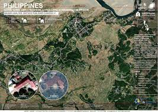
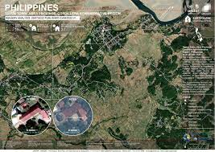

WELCOME TO THE PROVINCE OF ABRA
HISTORY
Abra was created as a politico-military province in 1846, prior to which was part of the old Ilocos Province and later Ilocos Sur when Ilocos Region was divided into two provinces in 1818. Civil government was established in Abra on August 19, 1901, but was re-annexed to Ilocos Sur in February 1905. Abra remained a sub-province in 12 years, regaining its status as a province only after the passage of Act 2683 in March 1917.Agriculture is the main economic activity of the province. Horses, which the province is known for in the Cordilleras and Northern Luzon, were a major mode of transportation during the Spanish period. The Abra River is widely utilized as a means of traversing and travelling in and out of the province.
GEOGRAPHY
Abra has a total land area of 4,165.25 square kilometres or 1,608.21 square miles. The province is bordered by the towering mountain ranges of the Ilocos in the west and the Cordillera Central in the east. The Abra River runs from the south in Benguet to the west and central areas bisecting the Abra Valley.
DEMOGRAPHICS
 

The population of Abra in the 2020 census was 250,985 people, with a density of 60 inhabitants per square kilometre or 160 inhabitants per square mile.Abra's inhabitants are mostly descendants of Ilocano settlers and members of the Tingguian tribe. Based on 2000 census data, Ilocanos comprised 71.94% (150,457) of the total provincial population of 209,146. Tingguians came in second at 18.7% (39,115), while other ethnic groups in the province were the Ibanag at 4.46% (9,334), Itneg at 3.17% (6,624), and Tagalog at 0.42% (869).
ECONOMY
As of 1990 there were 743 cottage industries in Abra of which 208 are registered with the Department of Trade and Industry. 59% are engaged in bamboo and rattan craft making, both leading industries in the area. Abra's economy is agriculture-based. Its major crops are rice, vegetables and root crops. Commercial products include coffee, tobacco and coconut. Extensive grassland and pasture areas are used for livestock production.
TOURISM
Kaparkan Falls is a natural wonder in Tineg in Abra province, Philippines. It is a cascading waterfall surrounded by lush greenery and towering trees, creating a refreshing and picturesque environment for visitors.The falls are accessible by trekking through steep and rocky terrain, which takes around 30 minutes to an hour, depending on one's pace. The hike may be challenging, but the stunning view of the falls makes it all worth it.
ATTRACTIONS
There are many tourist attractions in Abra Province, Kaparkan Falls has a height of around 60 feet and a width of approximately 80 feet, making it one of the most impressive waterfalls in the region. The clear and cold water of the falls flows into a natural pool perfect for swimming, especially during the summer when the temperature can be sweltering.At the Apao Rolling Hills summit, visitors are treated to a stunning view of the Cordillera mountain range —including the nearby Mount Patoktok. The rolling hills are covered in verdant grass that changes color depending on the season, making it an ever-changing and captivating landscape.Victoria Park, also known as Cassamata Hill National Park, is a stunning natural attraction in the province of Abra in the Philippines and many more.
SCHOOLS AND UNIVERSITIES
The Abra State Institute of Sciences and Technology (ASIST) started as a lowly industrial school in 1908 by an American educator, Mr. Amos Allen, with the vision of integrating the people in the area into the objectives of national development. Five Americans administered the growth of the school until 1917.